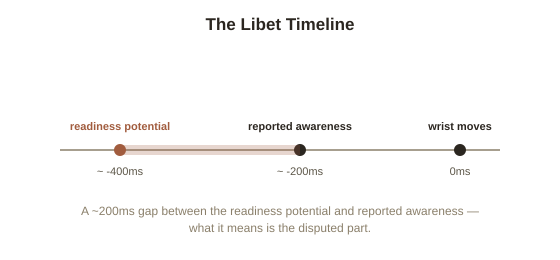

Chapter 2: The Libet Experiments and What They Actually Show
Chapter 1 ended with a hook about a neuroscience experiment that's been cited, argued over, and misquoted more than almost any other single study in the free will debate. It's worth its own chapter, both because the actual result is more interesting than the popular version, and because the popular version usually gets it wrong in a way that matters.
What Libet actually measured
In the early 1980s, neuroscientist Benjamin Libet asked participants to perform a very simple task: at a moment entirely of their own choosing, flick their wrist, while watching a fast-moving dot on a clock face so they could report, as precisely as possible, the exact moment they became consciously aware of deciding to move. Meanwhile, electrodes on the scalp recorded a slow buildup of electrical activity in the brain's motor areas called the readiness potential (a gradual rise in electrical activity, detectable by EEG, that reliably precedes a voluntary movement). Libet's finding: the readiness potential began rising roughly 350–400 milliseconds before participants reported consciously deciding to move — the brain, by this measure, appeared to be gearing up for the action before the person's own conscious awareness of "deciding" arrived.

Why the popular reading overstates the result
The headline version of this experiment — "science proves free will is an illusion, your brain decides before you do" — goes well past what Libet's data actually shows, for a few concrete reasons. First, the task itself was trivial and consequence-free: flicking a wrist whenever you feel like it isn't remotely representative of a real decision, like accepting a job offer or ending a relationship, and there's no strong reason to think a instant, arbitrary motor act generalizes to reasoned choices. Second, and more technically, Libet asked participants to introspect the exact millisecond they became aware of deciding — a notoriously unreliable kind of self-report, since it requires simultaneously performing an action and precisely timestamping an internal, subjective event, which several later studies suggest people are systematically bad at. Third, even Libet himself didn't conclude free will was dead: he proposed that while the initial urge may arise unconsciously, conscious awareness still has time for a late "veto" — the ability to consciously block the action in the roughly 100-200 milliseconds before it happens — which he called free won't, a much narrower but still meaningful form of conscious control.
What later work actually found
Follow-up research has both sharpened and complicated the original picture. Neuroscientists Chun Siong Soon, John-Dylan Haynes, and colleagues, in a 2008 study using fMRI, found that activity in certain frontal and parietal brain regions could predict which of two buttons a participant would press up to 7-10 seconds before the participant reported consciously deciding — far longer than Libet's fraction of a second, which strengthened the "brain decides first" reading for some. But other researchers have pushed back hard on what the readiness potential actually represents in the first place: a 2012 study by Aaron Schurger and colleagues proposed that the readiness potential might not be a specific "decision signal" building toward a choice at all, but closer to the visible peak of ordinary, continuous background neural noise — and that the "decision" happens whenever that noise happens to cross a threshold, which would make the whole "brain decides before you" framing a mischaracterization of what's being measured. The finding itself hasn't been overturned. What it actually demonstrates has been in dispute for over forty years.
What this does and doesn't settle
Even taking the strongest version of the result at face value, it's worth being precise about what it would and wouldn't prove. It would show that some initial neural process precedes conscious awareness of a decision — which is compatible with, and arguably predicted by, both hard determinism and compatibilism from Chapter 1, since both already accept that some prior cause generates your choices; only libertarian free will, in its strongest form, is directly threatened by this kind of finding. What it doesn't obviously settle is the more basic metaphysical question from Chapter 1 — whether "you" are your conscious awareness specifically, or the whole brain process, conscious and unconscious parts together, in which case the readiness potential building before you're aware of it is simply what a decision being made by you looks like from the inside, one step at a time.
Try this
Ideas for noticing or testing this in your own life.
- Try Libet's basic task yourself: flick your wrist at a moment of your own choosing a few times, and pay attention to whether you can actually catch the precise instant you "decided," or whether the decision and the awareness of it feel simultaneous, blurred together.
- Practice "free won't" directly: next time you feel an urge to say or do something reflexive, notice the brief window where you can consciously override it — that pause is the part of Libet's own theory the popular science-journalism version usually leaves out.
Worth pulling on?
A few loose threads from this chapter — if any of these genuinely grab you, that's a good sign of where to go next.
- If neuroscience can't cleanly settle whether you're "really" the author of your choices, a separate question becomes urgent: does moral responsibility actually require that you are, or is something else doing the real work when we praise and blame people? → The subject of the next chapter: moral responsibility without libertarian free will.
- The unreliability of introspecting your own exact decision moment connects to a much broader finding about how little direct access people have to their own mental processes generally. → Already in the library: Cognitive Biases & Judgment covers this from the psychology side.